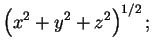
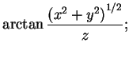
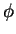
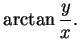
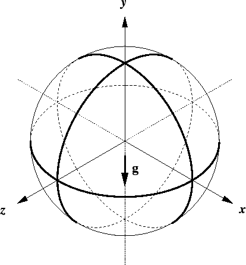
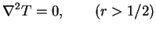
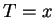

Next: The low Grashof number
Up: Spherical enclosures
Previous: Previous work
Contents
Take the diameter of the sphere as the length scale,  , and introduce
spherical polar coordinates relative to the positive
, and introduce
spherical polar coordinates relative to the positive  -axis:
-axis:
 |
 |
 |
(8.2) |
|
|
 |
(8.3) |
|  |
|
 |
(8.4) |
The relation of the Cartesian axes to the directions of gravity and the
imposed gradients, as illustrated in figure 8.1,
Figure 8.1:
Cartesian axes for the spherical cavity subjected to a linear
variation with  of vapour mass fraction and temperature at the boundary.
of vapour mass fraction and temperature at the boundary.
|  |
is the same as for the cuboid.
Ostroumov's (1958) study is more general than mine in that it considers the
finite conductivity of the surrounding solid. Since solids, in general,
are much
more conducting than gases, and since the primary purpose here is to illuminate
confined convective flow, let us assume that the solid is infinitely conducting.
If the temperature gradient in the solid far from the cavity is uniform and
horizontal (parallel to the -axis), the temperature at the boundary
of the sphere is analogous to the flow potential on a solid sphere moving along
the -axis through a perfect fluid; i.e. it varies linearly with (Lamb
1932, p. 123), though the gradient differs from that in the far solid.
Explicitly, the temperature field
satisfies
|  |
|
|
(8.6) |
 |
|
|
(8.7) |
 |
|
|
(8.8) |
and leads to  on the boundary of the cavity. The temperature field
in the surrounding solid is shown in figure 8.2.
Figure 8.2:
Temperature in the highly conducting solid surrounding a spherical cavity.
The field is axisymmetric everywhere, and linear in the far field.
 |
This point appears to have been missed by Lewis (1950) and Ostrach (1988), who
thought that `this temperature corresponds to that which would occur in the
solid without gas bubbles' (Ostrach 1988),
which is true but irrelevant.
As in §7.5.2, it is assumed that the vapour mass fraction
at the boundary is a linear function of temperature; thus,
Next: The low Grashof number
Up: Spherical enclosures
Previous: Previous work
Contents
Geordie McBain
2001-01-27